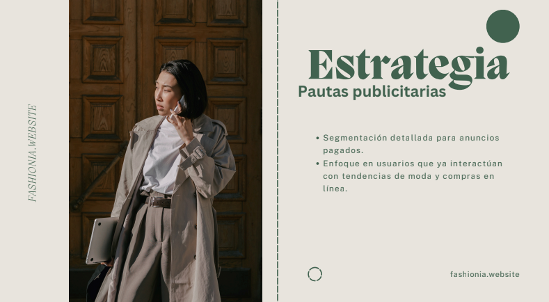
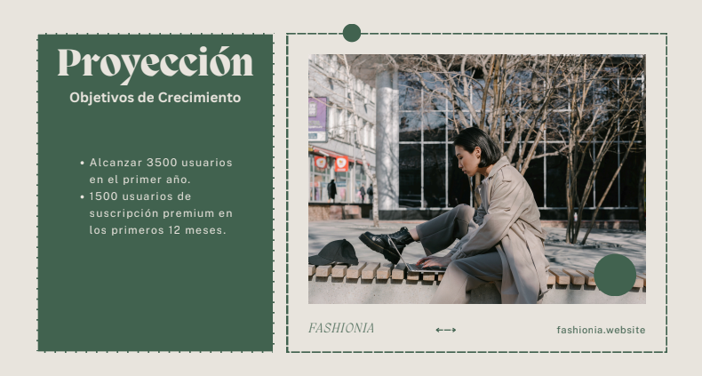

Funcionalidades a nivel prototipo.
Backend funcional
El desarrollo del backend se realizó usando FastAPI, creando una API que recibe imágenes y devuelve recomendaciones de productos similares basadas en características visuales. A continuación, se resumen los pasos más importantes de este proceso:
1. Recepción de la imagen
La API permite al usuario cargar una imagen. Esta imagen se procesa convirtiéndola a formato RGB, redimensionándola a 256x256 píxeles y normalizándola, garantizando que esté lista para ser utilizada por los modelos.
2. Extracción de características con VGG16
Una vez procesada, la imagen es pasada a través de un modelo preentrenado de VGG16, que extrae un vector de características visuales de la imagen, representando su contenido.
3. Reducción de dimensionalidad con PCA
El vector de características extraído es transformado mediante PCA, lo que reduce su dimensionalidad. Esto permite optimizar el proceso de búsqueda de imágenes similares y hacerlo más eficiente.
4. Búsqueda de imágenes similares con KNN
Después de aplicar PCA, el algoritmo de K-Nearest Neighbors (KNN) busca en el conjunto de datos las imágenes más similares a la proporcionada por el usuario, calculando las distancias entre las características reducidas.
5. Respuesta en formato JSON
Finalmente, se devuelven las rutas de las imágenes más similares junto con las distancias calculadas en formato JSON, facilitando su visualización en el frontend como recomendaciones de productos similares.
Video explicativo
A continuación, puedes ver un video demostrativo del sistema en acción:
¡Prueba la API tú mismo!
Ahora que has visto cómo funciona el sistema, te invitamos a hacer una prueba tú mismo. Puedes acceder a la documentación de la API interactiva y hacer tus propias peticiones:
Frontend Funcional
El desarrollo del frontend se realizó utilizando Streamlit, proporcionando una interfaz sencilla y amigable para interactuar con el sistema de recomendación de productos de moda. A continuación se detallan los principales pasos del desarrollo:
1. Subida de imagen
La aplicación permite al usuario subir una imagen desde su dispositivo (en formato .jpg o .png). Una vez cargada, la imagen se muestra en la pantalla, redimensionada a 150x150 píxeles para mayor nitidez y adaptación al diseño visual.
2. Selección del número de recomendaciones
El usuario puede elegir el número de productos recomendados mediante un control deslizante, con un rango de entre 1 y 10 recomendaciones. Este valor se utiliza como parámetro para solicitar a la API el número deseado de productos similares.
3. Generación de recomendaciones
Cuando el usuario presiona el botón “Generar Recomendaciones”, la imagen se convierte en un archivo binario (formato JPEG) y se envía a la API de recomendación a través de una solicitud POST. También se incluyen los parámetros adicionales, como el número de recomendaciones solicitadas.
4. Procesamiento de la respuesta
Si la API responde exitosamente, la aplicación recibe un conjunto de productos recomendados junto con sus distancias (que indican la similitud con la imagen original). Cada recomendación contiene la ruta de la imagen y la distancia calculada.
5. Visualización de las recomendaciones
Las imágenes recomendadas se muestran en la interfaz en un formato de mosaico, distribuidas en columnas (tres columnas por fila). Cada imagen se redimensiona a 150x150 píxeles y se presenta con una etiqueta que indica la distancia con respecto a la imagen original. Si ocurre un error durante el proceso, se muestra un mensaje adecuado para notificar al usuario.
Video explicativo
A continuación, puedes ver un video demostrativo de la aplicación frontend en acción:
¡Prueba el Frontend!
Te invitamos a interactuar con el sistema de recomendaciones utilizando la aplicación frontend que hemos desarrollado. A continuación, puedes acceder a la interfaz interactiva:
Material publicitario para promoverlo.
Landing Page
Para promocionar el producto, se diseñó una landing page con un enfoque estratégico, donde se destaca la relevancia y los beneficios del producto. A lo largo de la página, se guía al usuario a través de un embudo de conversión cuidadosamente diseñado. El objetivo principal es motivar al visitante a realizar una prueba gratuita, utilizando llamados a la acción (call to action) efectivos.
La intención es que, al probar el producto, el usuario se sienta atraído por su valor y se incline a suscribirse a uno de los planes ofrecidos. Esta landing page fue desarrollada utilizando una herramienta no-code, lo que permitió agilizar su implementación y optimizar el proceso sin necesidad de codificación, garantizando una experiencia fluida y visualmente atractiva.
Piezas gráficas publicitarias
Estas piezas gráficas publicitarias fueron creadas con el propósito de atraer la atención del público objetivo hacia una campaña específica, utilizando una combinación de elementos visuales atractivos, mensajes persuasivos y un diseño coherente. Cada una de las imágenes busca transmitir un mensaje claro y directo que resuene con los valores y necesidades del consumidor, a la vez que refuerza la identidad de la marca o producto promovido.

Plan de mercado
Este Plan de Mercado equilibra una estrategia moderna con influencers y redes sociales, con tácticas de marketing tradicional y acciones de adquisición de usuarios. Las campañas con micro-influencers en moda ética refuerzan la imagen de exclusividad y personalización, mientras que las campañas de SEO y email marketing garantizan una base de clientes constante.
NOTA: DARLE EN LA FLECHA PARA VER LA PRESENTACIÓN
 
Plan de negocio
Este plan de negocios presenta una solución a la “parálisis por análisis” que enfrentan los usuarios al comprar ropa en línea, mediante un sistema de recomendaciones basado en un input de prendas. El modelo de negocio se enfoca en ingresos por suscripciones, publicidad dirigida y licenciamiento del motor de recomendación. Se analizan los costos iniciales, ingresos potenciales y el mercado objetivo, compuesto por personas de 18 a 40 años interesadas en moda sostenible y personalizada.
NOTA: DARLE EN LA FLECHA PARA VER LA PRESENTACIÓN
Reportes Técnicos
El principal reporte técnico desarrollado está enfocado en la construcción del algoritmo utilizado para el proyecto. Este documento se encuentra publicado en Quarto Pub, donde se detallan los aspectos más relevantes del algoritmo, desde su diseño hasta los resultados obtenidos.
Por otro lado, el código completo del backend y frontend está disponible en GitHub, donde se incluyen comentarios para facilitar la comprensión y uso del sistema. Puedes acceder al repositorio del proyecto dando click en el botom:
Oportunidades de Mejora
1. Entrenamiento del modelo con una base de datos más grande
El modelo actual podría beneficiarse significativamente al entrenarse con una base de datos más extensa. Existe un conjunto de datos disponible de 16 GB, que podría mejorar la precisión y variedad de las recomendaciones. Sin embargo, el procesamiento de un conjunto de datos de esta magnitud requerirá un mayor poder computacional, posiblemente recurriendo a soluciones de procesamiento en la nube como AWS, Google Cloud o Azure para manejar el entrenamiento de manera eficiente.
2. Incorporación de variables adicionales
Agregar al modelo características adicionales como el tipo de prenda, estilo y otras propiedades relevantes enriquecería las recomendaciones. Estas variables permitirían personalizar las sugerencias según preferencias específicas del usuario, como eventos formales o casuales, colores, temporadas, entre otros, mejorando la experiencia del usuario y ajustándose más a sus necesidades.
Recomendaciones
Optimización en la nube: Considerar migrar el entrenamiento del modelo a plataformas de procesamiento en la nube como AWS Sagemaker, que no solo permiten entrenar con grandes volúmenes de datos, sino también optimizar costos con opciones de instancias escalables. Esto también facilitaría el uso de GPUs para acelerar el proceso de entrenamiento.
Uso de Transfer Learning: Aprovechar técnicas de transfer learning para adaptar un modelo ya entrenado con grandes volúmenes de datos. Esto permitiría entrenar el modelo de forma eficiente sin necesidad de procesar desde cero el conjunto de datos completo.
Implementación de filtros avanzados: Incluir filtros en la interfaz del frontend que permitan a los usuarios seleccionar criterios adicionales (como categoría de prendas, estación del año o preferencias de color), lo que haría las recomendaciones más personalizadas y relevantes.
Monitoreo y mejora continua del modelo: Implementar una estrategia de monitoreo del rendimiento del modelo, que permita ajustar su comportamiento de manera periódica y agregar nuevos datos de entrenamiento, lo que garantizaría que el sistema evolucione junto con las tendencias y preferencias de los usuarios.
Reporte de Contribución Individual de los intregrantes del proyecto
Ronald Gabriel Palencia
- Desarrollo de la API en FastAPI
- Desarrollo del frontend en Streamlit
- Desarrollo del algoritmo
- Despliegue del modelo en Render
- Creación de la landing page en WordPress
- Estructura del informe
- Organización del repositorio
Junior Antonio Muñoz Henao
- Desarrollo del Plan de negocios
- Desarrollo del Plan de mercadeo
- Desarrollo de piezas publicitarias